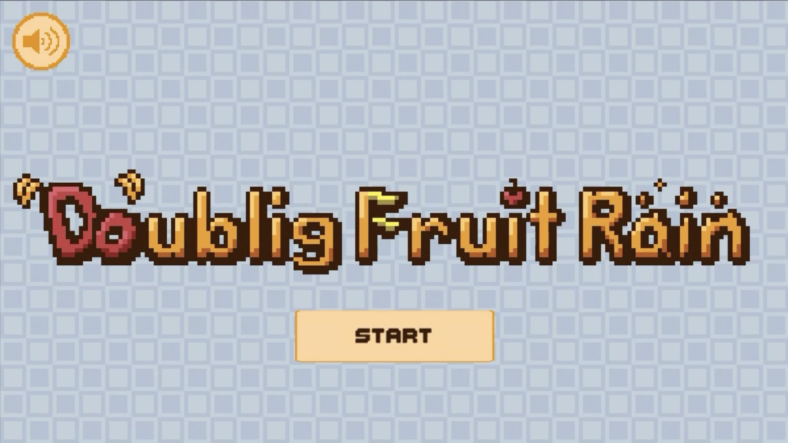

About me

すーぴあ / Suupia
ゲームを輝かせる笑顔のプログラマー
音楽制作も好き
Projects
自主制作
BANgBANgStreaming（9人開発）BitSummit
期間: 2024年4月〜7月（5ヶ月）
制作目的: 今までの経験を活かしてゲームジャムで賞を取る
使用技術: Unity, R3, VContainer
内容: アクション2Dタワーディフェンス
役割: リードプログラマー、企画、サウンド
itch.io: https://bitsummit-gamejam.itch.io/bangbangstreaming


ゲームの詳細
「BANgBANgStreaming」は、アクション2Dタワーディフェンスゲームです。プレイヤーは、配信者となり、視聴者からのコメントを受け取りながら、ステージを攻略していきます。視聴者のコメントによって視聴者数が増減し、ゲームの終わりのイラストが変化します。
こだわった点
ゲーム内のストリーミング機能を実装し、プレイヤーが実際に配信者としてゲームをプレイする体験を提供しました。自作コントローラーや台パン用の巨大エンターキーなどで操作する設計にし、BitSummit当日では多くのお客様に遊んでいただけました。
制作背景
2023年のBitSummitで作成した「猫は液体」は審査員の方からは高評価でしたが、惜しくも賞を取ることはできませんでした。また、チームビルディングもうまくいったとは言い難かったためその点の悔いが残っていました。「BANgBANgStreamin」では去年の経験を活かしてチームビルディングから企画、設計までをきちんと行うようにしました。 当日の展示の良さもあり、最優秀賞を受賞することができました。
プログラミング的にはSOLID原則を遵守する、継承はなるべく使わない、VContainerを使用して疎結合な作りを保つ、単体テストを作成する、関数型のアプローチを部分的に採用するなどのことに挑戦しました。チーム間で認識の齟齬がないようにサポートを全力で行いました。 このように作成していたため、度重なる仕様変更に柔軟に対応できました。
Carry Block! (10人開発)

期間: 2023年3月〜2023年11月（8ヶ月）
制作目的: 3Dオンライン協力ゲームの開発とリーダーシップ経験を積む
使用技術: Unity, PhotonFusion
内容: 3Dオンライン協力アクションパズル
役割: リーダー、企画、プログラム
GitHub:
写真館<<黄泉の前>>（2人開発）Siv3Dゲームジャム
期間: 2023年10月（2週間）
制作目的: C++を用いたゲームの制作の経験を積む
使用技術: C++, Siv3D
内容: 2Dノベルゲーム
役割: 企画、プログラム、サウンド


ゲームの詳細
「写真館<<黄泉の前>>」は、写真館を舞台にしたノベルゲームです。プレイヤーは、死後の世界に近い黄泉の近くにある写真館の店員となり、訪れる客の過去の写真を提示していきます。写真を通して、客の思い出を取り戻し客を現世に返す物語です。
こだわった点
ゲーム内のキャラクターや背景、ストーリーなどを丁寧に作成し、プレイヤーがゲームの世界に没入できるようにしました。
制作背景
このゲームは、バンダイナムコスタジオ杯 Siv3D ゲームジャム にて作成したゲームです。即席のチームで開発をし、私は主にプログラミングの担当をしました。Siv3DやC++といった慣れない環境での制作でしたが、形にすることができました。
猫は液体（4人開発、BitSummit）
期間: 2023年7月（2週間）
制作目的: チーム開発のスキルを向上させる
使用技術: Unity
内容: 2Dアクションパズル（イライラ棒のようなゲーム）
役割: リーダー、企画、プログラム、サウンド
Doubling Fruit Rain（2人開発、Unity 1 week）
期間: 2023年6月（1週間）
制作目的: 短期間で完成度の高いゲームを制作するスキルを磨く
使用技術: Unity
内容: 企画、プログラム、サウンド
UnityRoom: https://unityroom.com/games/everevergreen
EverEverGreen（2人開発）
期間: 2022年8月〜11月（3ヶ月）
制作目的: プランナーとして内定をもらっている方と文化祭に向けて作成する
使用技術: Unity
内容: 2D横スクロール&ノベル
役割: 企画、プログラム、サウンド、イラスト
GitHub:
exeファイル（GoogleDrive): https://drive.google.com/file/d/1259sqWknw5KO33TRxE_6pDdwsgUr3jNx/view?usp=drive_link
だっかん！モンスターの島（2人開発）
期間: 2021年7月〜12月（5ヶ月）
制作目的: 自身の作りたいゲームを作りきり、Steamで販売する
使用技術: Unity
内容: 2Dタワーディフェンス
役割: 企画、プログラム、サウンド、イラスト


ゲームの詳細
「だっかん！モンスターの島」は、タワーディフェンス型の戦略ゲームで、プレイヤーはモンスターの島を舞台に戦術を駆使して攻略を目指します。スピーディなバトルとルートの形によって発動するスキルの戦略性を特徴とし、様々なモンスターを使いこなす楽しさがあります。
こだわった点
モンスターのデザインやサウンドは、ゲームの雰囲気を高めるために細部までこだわりました。特にドット絵のアニメーションは一体一体丁寧に書き込み、それぞれのキャラの個性が出るようにしました。ストーリーやキャラごとの小話など世界観も作り込みました。また、ゲームの難易度調整に力を入れ、初心者から上級者まで楽しめるバランスを実現しました。
制作背景
他の人と協力して開発する経験を積みたいと考え、同じ大学の学生と2人で作成しました。自分たちの作りたいものをがむしゃらに作るという目標だったので、イラスト、BGM、ストーリー作成など全てのことに全力で取り組みました。Steamリリースまでできたので満足です！
Mystery Dungeon（個人開発）

期間: 2021年5月〜7月（2ヶ月）
制作目的: 一人でゲーム制作を完成させる経験を積む
使用技術: Unity
内容: 2Dローグライクダンジョン
役割: 企画、プログラム、サウンド、イラスト


ゲームの詳細
ターン制の戦闘システムやアイテム収集、ステージ探索を通じて、ダンジョン探索を楽しめます。ボスフロアも存在するので、どこまで進めるのか挑戦してみてください！
こだわった点
マップチップや、SE、BGMなどを自作し、プレイヤーが没入感を持てるようにやさしい世界観を作成しました。また、ステージ生成アルゴリズムにもこだわり、毎回異なるダンジョンを楽しむことができます。
制作背景
このゲームは私が初めて作成したゲームです。プログラミング経験は1か月ほどですが、その時点でできることを精一杯詰め込んで作成しました。敵がプレイヤーを見つけるアルゴリズムにBFSを使用しているのですが、当時はプログラミングの知識がなかったため、自分で頑張って実装した記憶があります。
Other Works
C++で作成したスネークゲーム
期間: 2日間
内容: C++を使用して作成したクラシックなスネークゲーム。基本的なゲームループ、衝突判定、スコア機能などを実装。
Unityで開発したスプライトを自動でアニメーターにするツール
内容: Unity上でスプライトを自動的にアニメーターに変換するツールを開発。ゲーム開発の効率を向上させるためのツールとして活用。
スキル
プログラミング言語
- C#（3年半）
- C++（4ヶ月）
- Java（1ヶ月）
- Python（3ヶ月）
- Haskell（5ヶ月）
- Rust（1ヶ月）
- F#（1ヶ月）
- Swift（1ヶ月）
ゲーム開発
- Unity（3年半）
音楽制作
- Logic Pro X（3年半）
グラフィックデザイン
- Clip Studio（3年）
バージョン管理
- Git（3年）
CI/CD
- GitHub Actions（1ヶ月）
シェル
- zsh
- PowerShell
エディタ
- Rider
- Visual Studio Code
- Visual Studio
Links
- GitHub: https://github.com/suupia
- Qiita: https://qiita.com/suupia
- Zenn: https://zenn.dev/suupia
- YouTube: https://www.youtube.com/@suupia771
- SoundCloud: https://soundcloud.com/suupia771
自己PR
以下はチーム開発をしたCarryBlock！のリポジトリです。